Originally published on our site 5dwallpaper.com
There are some historical photographs that everybody has seen. From the iconic image of Marilyn Monroe standing over the Subway grate to the 1941 portrait of Winston Churchill, some photographs need no introduction.
Beyond these iconic images is a whole collection of rare photographs which tell history from a perspective that is never covered in school textbooks.
Read on to discover what teenagers in the 1950's did to kill time and which location provided shelter for hundreds of citizens in London during the Blitz. Each photo has a unique story to tell from a viewpoint you've never considered before.
Homecoming

Although it may look like a horrifically uncomfortable journey, this overloaded ship is actually a very uplifting photograph when you discover the context. The ship is full to the brim of American soldiers returning home from World War II in 1945.
Historia/Shutterstock (9831769a)
The aerial photograph is of the aft deck of the passenger liner 'Queen Elizabeth.' The war had been won and all of the soldiers on board would be returning home to their families and loved ones after spending years apart.
The President Goes to Yosemite
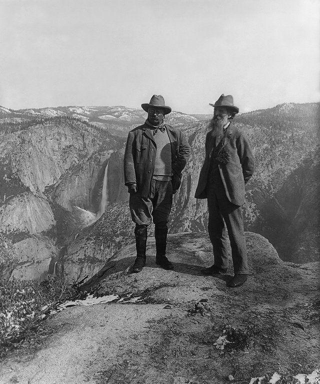
In 1903, President Theodore Roosevelt and the famous naturalist, John Muir, had a meeting at Yosemite National Park.
The meeting had a strong influence on the government's land and resources policy. In fact, the term "conservation" came into its present meaning in part as a result of this meeting.
Although we cannot see it in this photo, hundreds of visitors followed them, desperately trying to catch a glimpse of their president. The famous historical meeting is the subject of the 2016 feature "National Parks Adventure."
The 1966 Blizzard
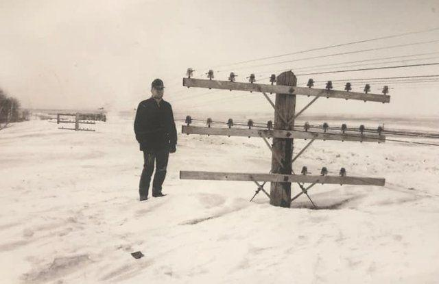
In 1966, a terrible blizzard swept across the United States and the East side of the Rocky Mountains.
The blizzard bought heavy snowfall and temperatures that reached record lows. At least 142 people died during the blizzard and 31 of these froze to death. Many people also died in fires that started while people were desperately trying to heat their homes. By the time the storm eased, the death toll had reached 201. This photo illustrates just how deep the snow levels reached.
Jamie Lee Curtis in Perfect
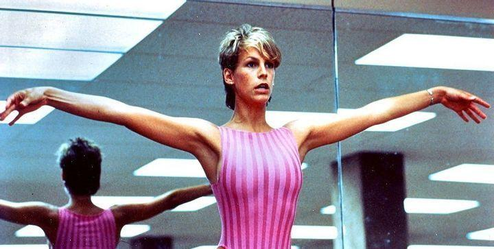
Let's face it. The 1980s were weird.
Really, really weird.
Shoulder pads, big hair and over the top movies were staples of that decade, and the movie Perfect, starring Jamie Lee Curtis and John Travolta, was no exception.
In it, Travolta plays a reporter exploring the exciting scene of - wait for it - singles' fittness clubs, and falls in love with Curtis' character, a fitness instructor.
Screenshot from "Perfect"
The gyrating hips and sweaty neon outfits that feature heavily in the movie weren't enough to save it from critics, but it's considered a classic "so-bad-it's-good" film that is a must in any '80s themed movie watching party.
Robert Kennedy at Disneyland
In this photo, Robert Kennedy is on an old roller coaster type ride at Disneyland with his and John Glenn's children. Robert Kennedy was a presidential candidate and was mortally wounded on the night he found out that he was the winner of the South Dakota and California presidential primaries in the 1968 election.
The First Recycling Sign
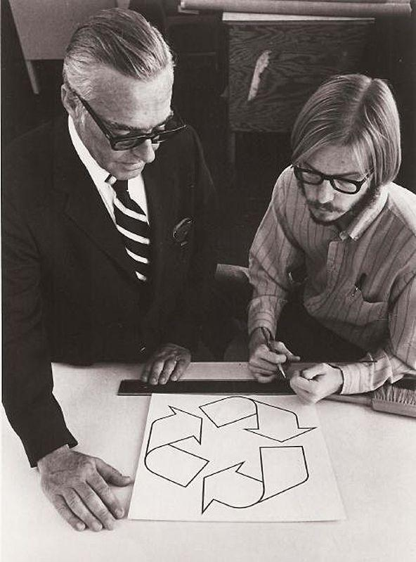
You have undoubtably seen the logo in this picture hundreds of times in your life. In this environmentally conscious age, the recycling logo is seen on dustbins, packaging and billboards.
It is unlikely that you have seen this photograph of the first recycling logo though. At the age of 23, Gary Anderson designed the recycling logo for a contest in 1970. He probably had no idea at the time just how successful and widespread his logo entry would later become.
Luxury Lawnmower
This photograph from a magazine depicts a luxury lawnmower in the 1950s.
The image we see looks like something out of a bizarre sci-fi universe. It is in fact a lawnmower designed to include air conditioning. You sit inside the air-conditioned bubble and mow the lawn without having to break a sweat.
The only downside is that you would need a pretty big shed to store one of these things but if you have the money to buy a luxury air-conditioned lawnmower, we doubt a small shed is going to be one of your problems!
The Oregon Trail
Getting The Giggles
Modern Take on History
Dolly Parton and Carl Dean
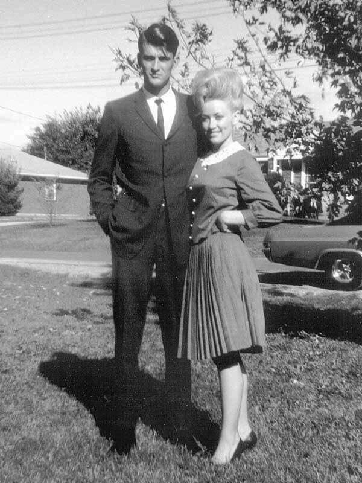
The stunning woman is a young Dolly Parton posing for a picture with her husband Carl Dean.
Parton and Dean married in 1966 and have been married ever since. Here, they are posing on their lawn in a glamorous 60s attire.
"My first thought was I'm gonna marry that girl," Dean recalled when the couple renewed their vows at their 50th wedding anniversary. "My second thought was, 'Lord she's good lookin.' And that was the day my life began."
The Race For Space, 1961
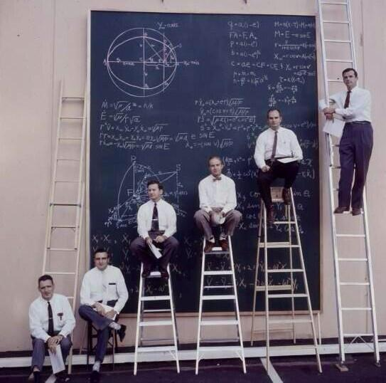
These NASA scientists are calculating complex spacecraft trajectories using a long and tedious calculation. As there were no computers, all their work would have to be done on a chalk board. The board is filled with so many calculations that long ladders are needed to fill up all the space.
Realistically, the equations on this board are probably just generic equations to be published in a magazine. During the Race for Space, the scientists would not have wanted their real calculations to be published in Life magazine!
WWII's Oldest Sniper
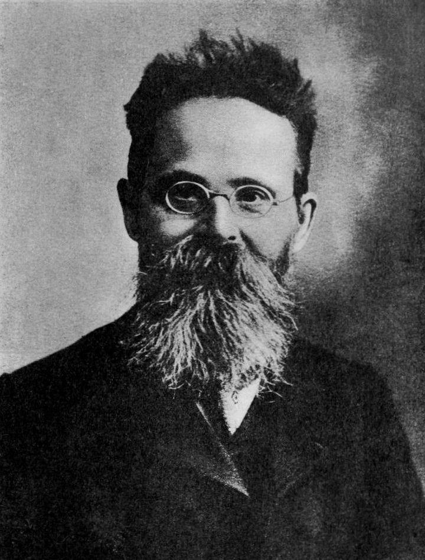
Born in 1954, Nikolai Alexandrovich Morozov was a Russian communist revolutionary who, due to his activities against the tsar, was inprisoned for 25 years. He was released in 1905 and continued working for the communist party.
In 1942, when he was 88, he joined the Red Army to fight in World War II. He was assigned to a battalion in the Volkhov area during the Siege of Leningrad as a sniper. He was awarded the Medal "For the Defence of Leningrad" and the Order of Lenin in 1944.
Image by Russian Information Bure/Wikimedia Commons
In 1946, he passed away at 92.
Brave Franceska Mann
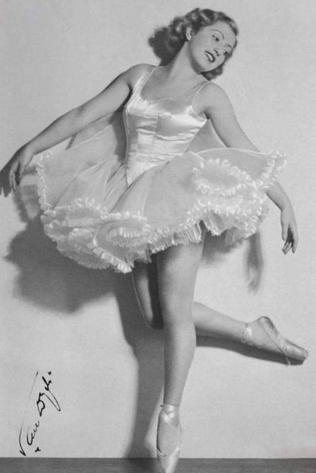
The brave Franceska Mann (pictures) was a Polish-Jewish dancer who was taken to Auschwitz in 1943. When she was ordered to strip, she did so in a provocative manner which momentarily distracted the guards. While they were admiring her physique, she quickly grabbed the roll call officer's gun and shot him, killing him instantly. She wounded one other guard and her bravery inspired other prisoners to join her rebellion. Unfortunately, the rebellion was unsuccessful and all the prisoners who partook in the rebellion were shot dead.
The Empire State Building, 1941
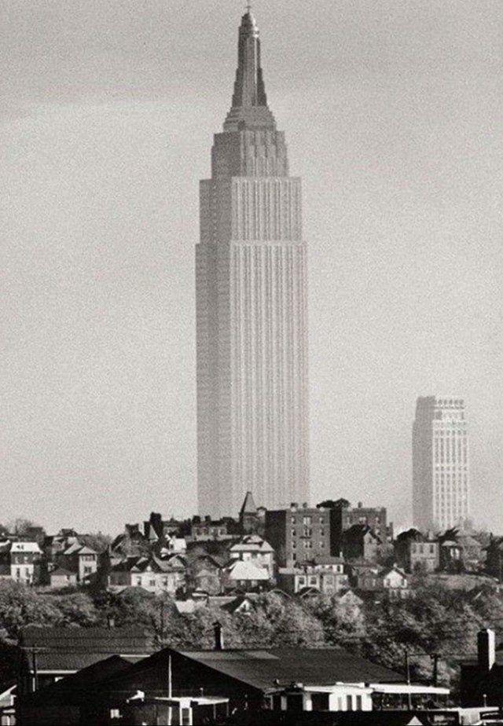
This may look like an image from a sci-fi movie from the 50s but this is actually the Empire State Building in 1941.
Before New York City was a city of skyscrapers, the average building was no more than a few stories high. When the Empire State Building was erected, it consequently looked unbelievably huge in comparison to the rest of the city. It's no wonder that people came to the city just to see the enormous iconic landmark.
The Three Stooges and Grandpa
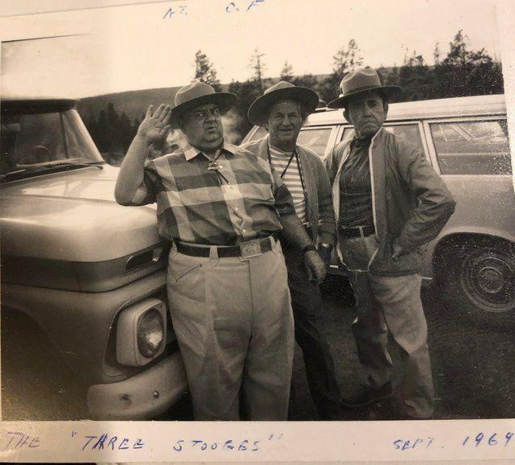
A user posted this photograph on Reddit with the caption: "My grandpa worked as a park ranger in Yellowstone, where he took this photo of The Three Stooges when they visited. 1969."
If you're looking at this photo, you may be wondering why there are only three people in it. Last time we checked, the three stooges + grandpa = 4 people.
If you look closely, you'll see a caption at the bottom of the photo which says the "Three Stooges" in quote marks. Grandpa must have anticipated our suspicion.
Burst of Joy, 1973
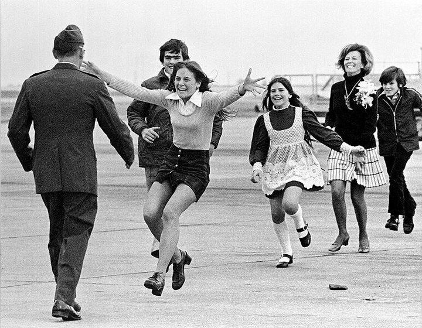
This poignant photo, officially titled "Burst of Joy", shows Lt. Col. Robert L. Stirm coming home from the Vietnam War in 1973. Photographer Slava "Sal" Veder captured the moment at Travis Air Force Base in California, after spending more than five years in captivity as a prisoner of war in North Vietnam.
Image by Slava "Sal" Veder/Wikimedia Commons
In the picture, Stirm's daughter Lorrie is leaping with joy, with her arms outstretched, and the rest of the family are beaming with happiness. It became famous worldwide for showing the mixed emotions of war.
Boy Watches Television For the First Time
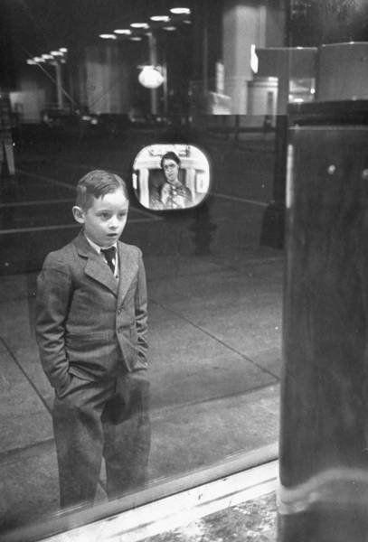
This adorable photograph captures the moment a boy watches TV for the first time in 1948.
The boy must be no more than nine or ten years old and has stumbled passed a shop window of an appliance store in the late 40s. A television set is being displayed in the window and his shocked expression is a result of the fact he has never seen a television in his life. The magical box displaying moving pictures had blown his mind.
When Einstein Met Chaplin
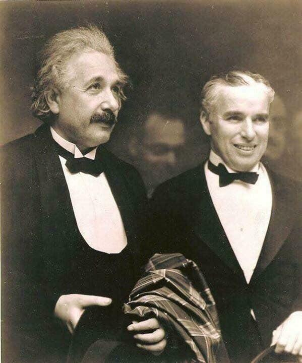
In January 1931, Albert Einstein met Charlie Chaplin at the City of Lights premiere. Prior to this meeting, Einstein had once said that Charlie Chaplin was the only person that he wished to meet someday.
At this meeting, Einstein said to Chaplin: “What I most admire about your art, is your universality. You don’t say a word, yet the world understands you!”.
“It’s true”, replied Chaplin. “But your fame is even greater: the world admires you, when nobody understands what you say."
Anthony Bourdain In His Kitchen
Anthony Bourdain was considered to be one of the most influential chefs in the world. Here, he is preparing a humble meal in his apartment in New York City, 1986.
Some years after this photograph was taken, Bourdain became known for his bestselling book Kitchen Confidential: Adventures in the Culinary Underbelly (2000). He then went on to have his own food and travel show and hosted Anthony Bourdain: No Reservations and The Layover.
Before his widespread fame, he was preparing fish in a small apartment in the city, dreaming of becoming a great chef.
Determined Bride
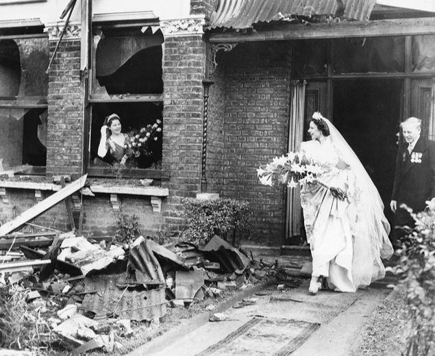
Here we have a bride leaving her recently bombed home on the day of her wedding in London, November 4, 1940.
In the 1940s, London was bombed day and night for nearly two months. This woman has had her home destroyed by a bomb but this has not stopped her from enjoying her special day. Dressed in a stunning white dress, the bride steps around the rubble with a big smile on her face. Her bridesmaid smiles and waves from the window, ignoring the destruction of the property to join in celebration of the happiest day of her friend's life.
Seeking Refuge On The London Underground
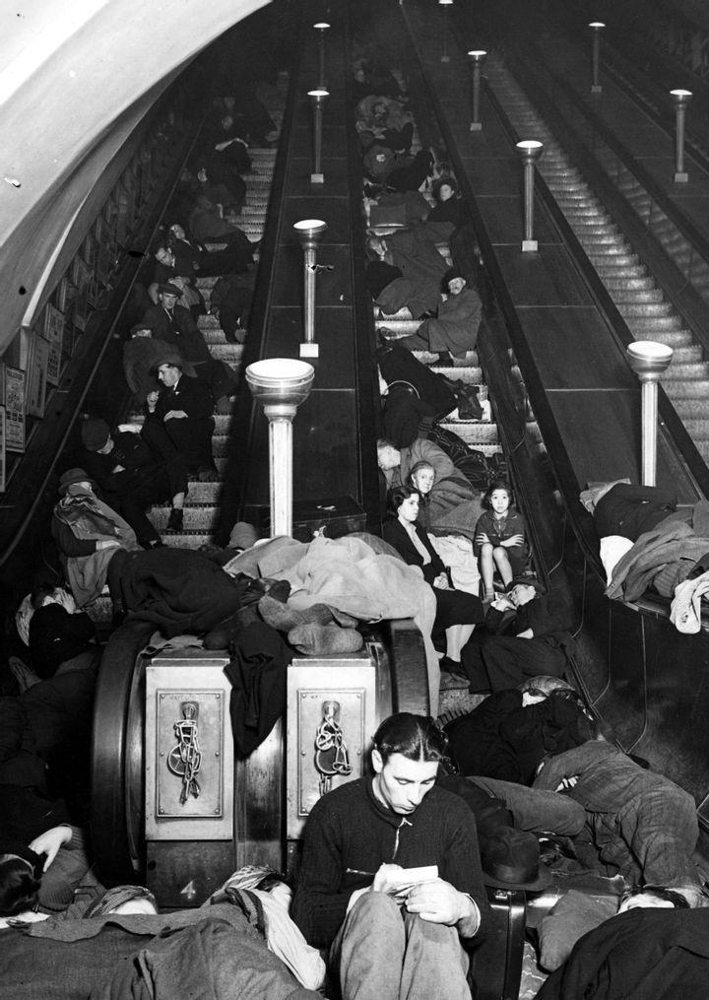
This photograph depicts the crowded conditions of the London underground during the Blitz, which was a German bombing campaign against Britain in 1940 and 1941.
In an attempt to seek shelter, hundreds and thousands of citizens would flee to the London underground in the 1940s. People would sleep on the escalators, platforms and would even hang hammocks across the rails. People were able to reserve spaces underground with a ticket system and there were food vendors and toilets available for those seeking refuge.
Shutterstock (202089a)
At Bethnal Green station in October, 1940, 173 people were crushed as they hurried to take refuge at the station.
Princess Elizabeth and Lieutenant Philip Mountbatten
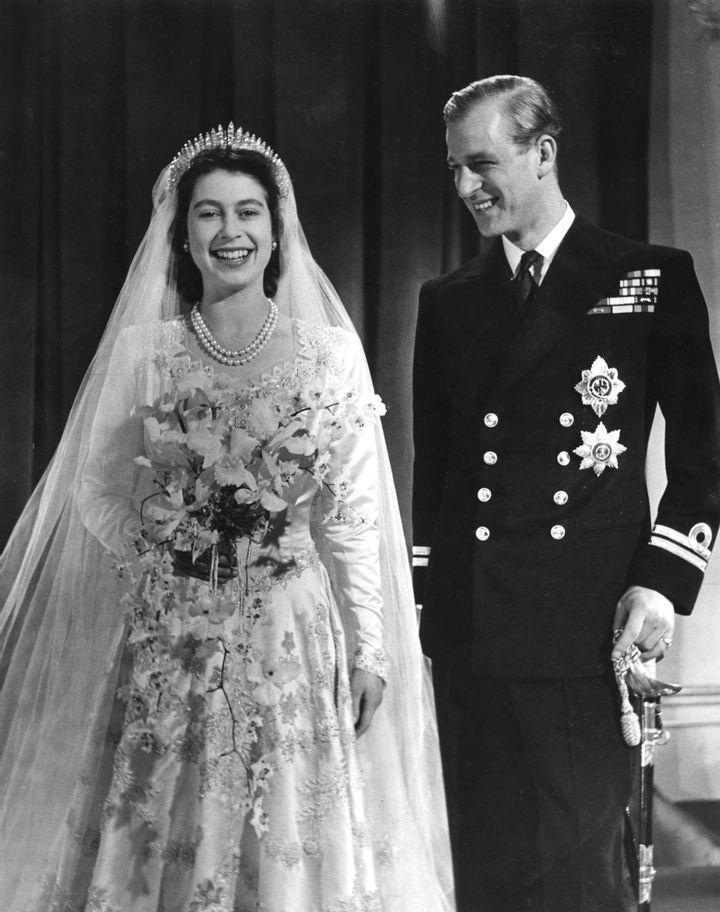
This gorgeous photo is of Queen Elizabeth II back when she was Princess Elizabeth. She is standing next to Prince Philip Duke of Edinburgh, who was then known as Lieutenant Philip Mountbatten. The couple is posing for an official photograph following their marriage. The wedding took place at Westminster Abbey on November 20, 1947. This rare photograph shows just what a stunner the royal beauty was in her youth. The couple look picture perfect on their royal wedding day.
Nikola Tesla In His Lab, 1890
Tesla was an electrical and mechanical engineer who is best known for his contributions to the modern electricity supply system. Tesla made dozens of scientific breakthroughs and was the former employee of Thomas Edison. Edison was his chief rival and rumor has it that it was actually Tesla who invented the lightbulb but Edison took the credit.
In this picture, Tesla seems unphased by the electric sparks shooting out from his lab and looks quite relaxed on a fold-out seat.
Refugees Entering NYC
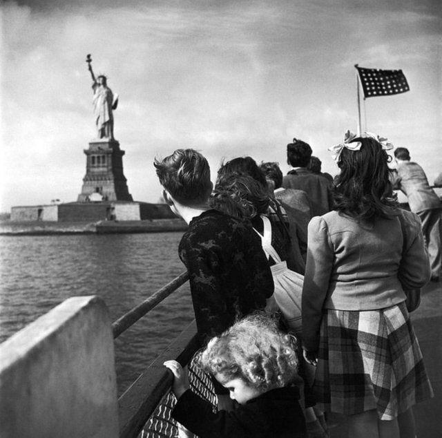
This is an image of WWII refugees seeing the Statue of Liberty for the first time as they enter the United States, 1946.
Following WWII, hundreds of Jewish refugees and Holocaust survivors were welcomes to the United States to give them the chance of starting a new and better life after the horrors they had endured. Here, a group of refugees are arriving in New York City. They are all pressed against the rails so that they can get a better look at the Statue of Liberty.
Potato Sack Dress
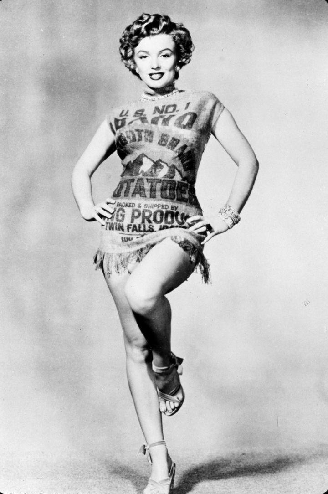
In 1951, Marilyn Monroe was snapped wearing a low-cut red dress to a party. The next day, a columnist slated her and claimed that she looked "cheap and vulgar." He then commented that she would have looked more decent in a potato sack than in her red dress.
Snap/Shutterstock (390853ia)
Marilyn had her own special way of responding to critics and dealt with his harsh comments with her wicked sense of humor. She simply responded with this brilliant photo proving that even in a potato sack, she still looks impossibly amazing.
Brooklyn Supreme
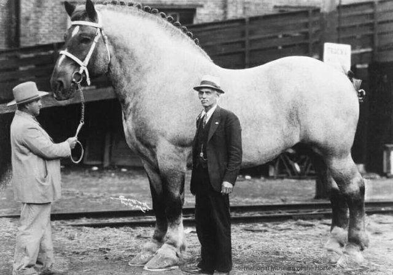
Brooklyn Supreme was a red roan Belgian stallion and is considered to be the largest horse to have ever lived (1930).
The horse was measured at 199cm in height and an astonishing 1450 kg in weight. For reference, this is more than 16x heavier than the average man and approximately the weight of an average sized car. Brooklyn Supreme was owned by Charles Grant Good and Ralph M. Fogleman. The pair exhibited the horse around the U.S. and charged spectators 10 cents to view the best.
Curiouser And Curiouser
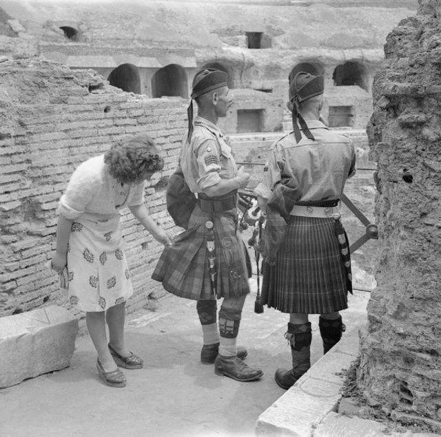
This Italian woman is curiously inspecting the kilt of a Scottish soldier. The soldiers are standing near the Coliseum after the liberation of Rome in 1944.
During the liberation, shops were closed and huge crowds of people took to the streets to cheer and hurl flowers at passing vehicles. They were celebrating Hitler's announcement that he had ordered all troops to withdraw from Rome.
While many photographs were taken of the celebrations, this image captures an Italian woman innocently taking a look at what we presume to be the first kilt she has seen.
50's Fashion Show
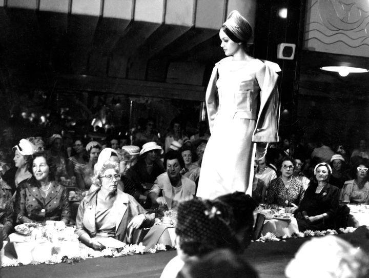
This image was take at a fashion show in 1950's Germany.
In the 50s, the world was recovering from the destruction of the war and had to rebuild architecture and reinvent culture. This reinvention aimed to bring communities lighter, happier culture and entertainment.
Our-Planet Berlin/imageBROKER/Shutterstock (9545783a)
Consequently, the 50s saw the rise of the fashion show and the glamorous 50s housewife. Christian Dior was incredibly influential during this time and Coco Chanel also reestablished herself with simple, elegant style and the little black dress.
Hemingway's Hobby
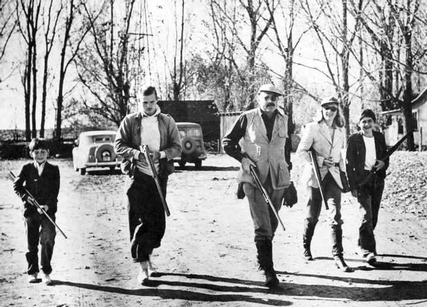
In this photograph, Ernest Hemingway is going shooting with his third wife, Martha Gelhorn and his sons Gregory, John and Patrick.
The family is going shooting at Sun Valley in Idaho, 1941.
Granger/Shutterstock (8673534a)
Hemingway (1899-1961) was one of the most influential American writers of all time. His modernist style is distinctively masculine and Old Man and The Sea remains a best-selling classic to this day. The male characters in Hemingway's fiction are often former soldiers and gun owners so it is no surprise to see him going shooting with his wife and sons.
Cleopatra
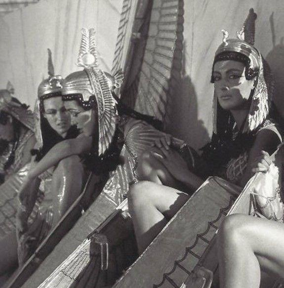
This photograph shows a glamorous group of extras relaxing on the set of Cleopatra in 1963.
The romantic drama tells the story of Cleopatra's manipulation of Julius Caesar and Marc Antony in a bid to save the empire. At the time, the dazzling and glamorous movie was the most expensive feature to have ever been made in the history of cinema. It is no wonder that the extras are taking a moment to relax while taking in the scenery and admiring the set.
Miss Perfect Posture
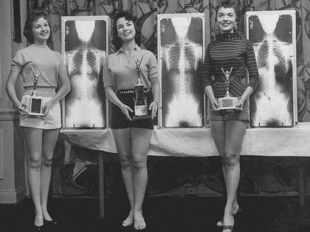
In May, 1956, a beauty contest was hosted at a chiropractic convention in Chicago. This photo displays the three proud winners with their trophies for perfect posture.
The contest winners were picked based on the beauty of their X-rays and their standing posture. Each girl had to stand on a pair of scales with one foot on each. The three winners distributed their weight equally on each meaning they had the correct standing posture. The event was hosted to improve the reputation of chiropractic, which was a relatively new profession at the time.
Discovering Antinous
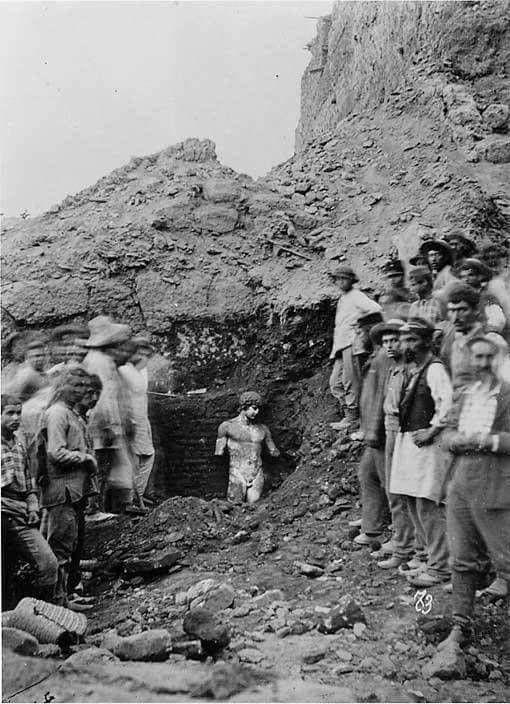
The Statue of Antinous was discovered in Delphi during an excavation in 1894.
The ancient statue is a young Greek beauty from Bithynia. He became the rumored lover of the Roman emperor Hadrian and died in Nile under suspicious circumstances.
Curiously, the statue was discovered standing upright on its pedestal alongside the holy Temple. It was found in relatively good condition and is known to be one of the most beautiful and impressive cult statues. It is likely to have been built following Antinous' death in 130 A.D.
The Animals of Berlin Zoo, 1945
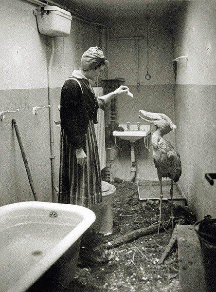
World War II was a difficult time for everyone, including the animals. Many of these animals were creatures that had been transported to Europe prior to the war. This photograph shows a citizen taking care of a curious looking bird. The bird was from Berlin Zoo and was just one of the many animals that ended up in the care of citizens as the Soviet troops approached Berlin in 1945. Imagine trying to use the bathroom with this crazy creature swanning about!
"I Don't Do Drugs, I Am Drugs"
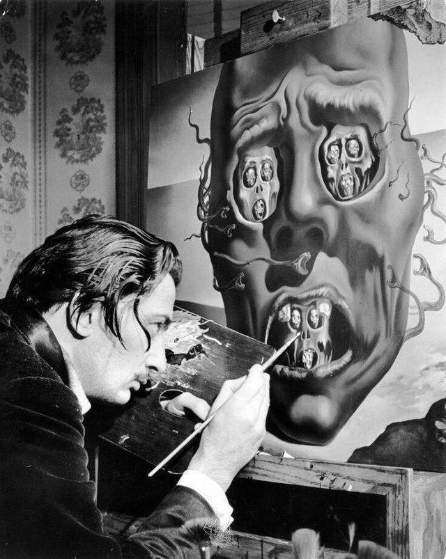
Here we have Salvador Dali painting "The Face of War" in 1941.
Dali was a 20th century surrealist painter whose work often depicts dreamlike worlds or states of mind. He painted many famous pieces including the melting clocks in "The Persistence of Memory" and "The Elephants." His unique and creative artistic approach led many to wonder whether Dali engaged in the use of psychedelics or hallucinogens. In relation to this painting, Dali said: "I don't do drugs, I am drugs."
Teens Killing Time
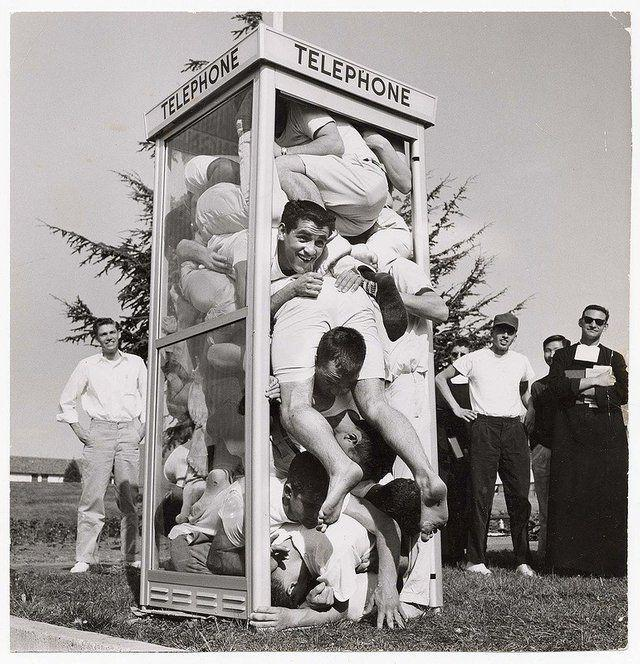
Teenagers doing silly and embarrassing things is not a phenomenon that is new to the social media generation. The only difference is that back in the 1950s, going viral wasn't the goal. Instead, the teens would likely receive some mixed expressions from a relatively small crowd and the satisfaction of a job well done.
This group have decided to take on the challenge of seeing how many people they can squeeze into a phone booth. We reckon there must be at least 15 in there but we're not sure exactly.
Young Slash
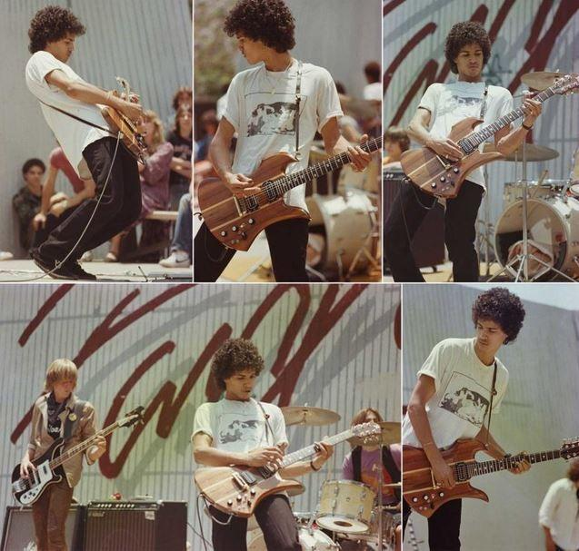
Whether you're a Guns 'N' Roses fan or just known "Sweet Child Of Mine", you probably recognize the guitarist Slash just by his huge head of curly black hair. Even the most diehard of Guns 'N' Roses fans will have a hard time recognizing the rock legend in this picture though.
This photo is of a young Slash in 1982 playing with his band Tidus Sloan at Fairfax High School. He is not playing his signature Les Paul but is playing a Mockingbird, which he has owned dozens of over the years.
Sweets At Last
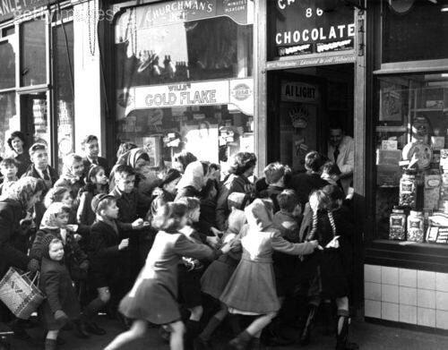
This wonderful photo is reminiscent of the U.S. on Black Fridays. All of these people are rushing inside a sweet shop on the day that sweet rationing ended in England, 1953.
Since the start of World War II, sweets had been rationed alongside many other items including eggs, milk and sugar. The year that the sweet ration ended, sales of confectionary increased by £100 million. Like the children in this photo, people all across the country queued to get their candy on the day the ration ended.
Alcohol Smuggling Lumber Truck
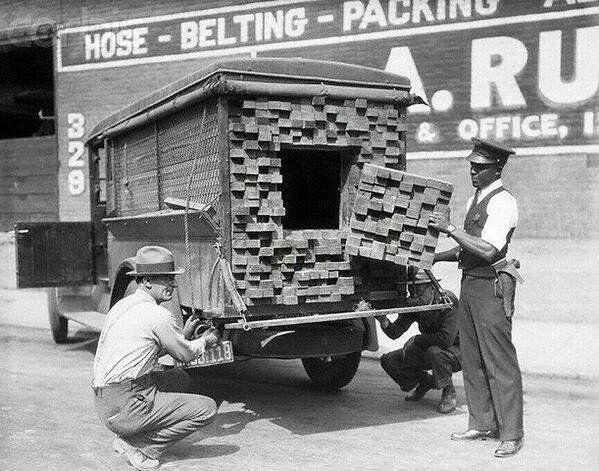
In 1926, the federal government increased the amount of methanol in alcohol to discourage people from drinking. They had tried to prohibit the use of alcohol but it consistently failed and so they had to take their own drastic measures.
This increased the demand for bootleg liquor meant that smuggling alcohol became popular trade. In this photograph, the police are inspecting a lumber truck which had been used to smuggle alcohol via a makeshift window disguised as a stack of lumber.
A Private Concert
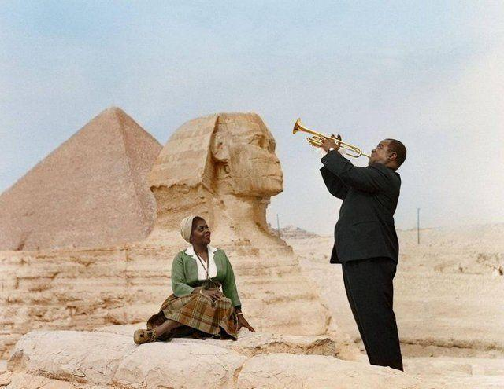
This spectacular image depicts Louis Armstrong serenading his wife Lucille in Egypt, 1961.
Louis Armstrong was an American composer and trumpeter and is considered to be one of the most influential figures in jazz. His career spanned from the 1920s to the 1960s and he was inducted into the Rhythm & Blues Hall of Fame in 2017.
In this picture, he is standing with wife in front of the great Sphynx. To receive a private concert from one of the greatest jazz players of all in time on one of the world's most incredible locations is quite something.
Three International Women
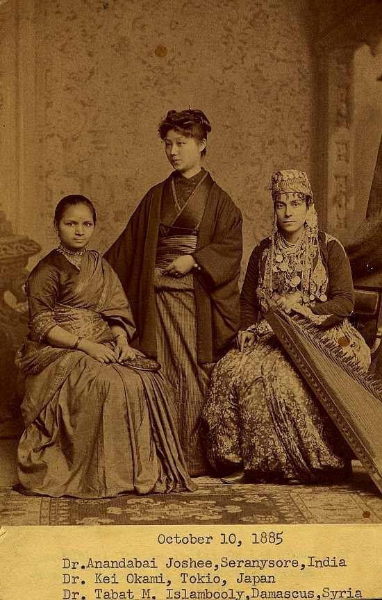
This stunning photo is of three women at the Women’s Medical College of Philadelphia in October 10, 1885.
What is remarkable about this photograph is that it contains an Indian woman, a Japanese woman, and a Syrian woman all training to be doctors. The women have overcome sexist and racist barriers of the time and have taken their future into their own hands by following their dreams in spite of the resistance against them. Their outfits are all astonishing too.
Nuns Vs Fashionista
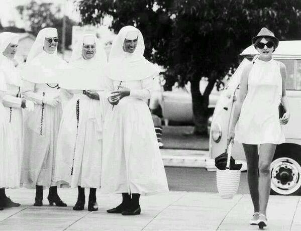
This photograph captures a group of nuns and a fashionista, standing side by side in the 60s.
What is lovely about this picture is the nun's expression. Despite their white gowns and traditional, modest dress, they are looking upon the fashionista with an admiring smile rather than judgment. The woman on the right is a stark contrast to the nuns in her short dress, sunglasses and stylish shoes and handbag. She does not seemed phased by the presence of the nuns but the contrast makes for a fantastic image.
The Whole Gang
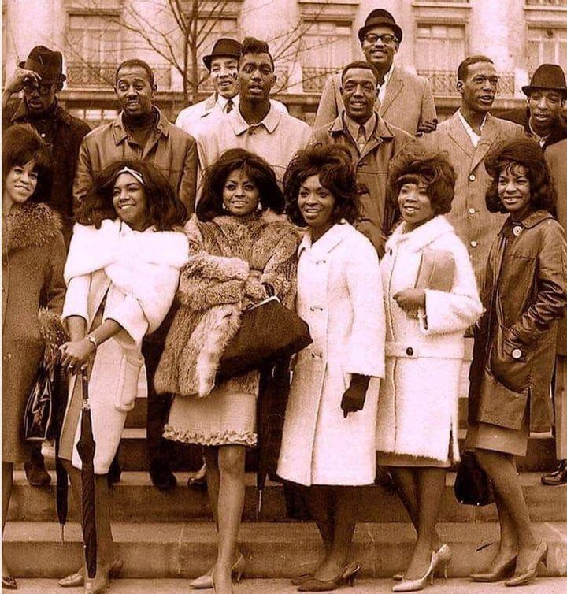
This rare photograph is of The Supremes, Martha and the Vandellas, The Temptations, and Smokey Robinson and the Miracles all posing for a photo in the mid 60’s.
This excellent photo features some of the most talented musicians in music history. It is a rare thing to see so many incredible and influential musicians all in one place at one time. Wherever they were playing must have been proud to host the Motown event of the century and we bet it was one hell of a show.
Honoring the Animals
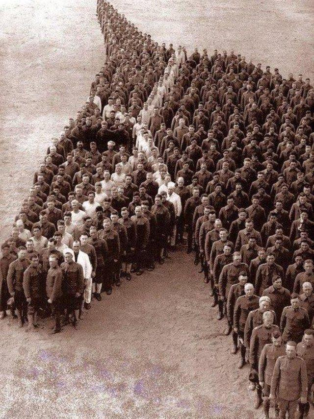
This remarkable photo from 1918 depicts American Soldiers paying tribute to the millions of horses, donkeys and mules that were killed during WW1.
In addition to the thousands of soldiers who were killed during the first great war, over 8 million horses, donkeys and mules were brutally slaughtered in battle.
In this photograph, American soldiers pay tribute to the animals who helped them win the war. They have joined together to form a horse's head and this moving photograph commemorates the forgotten animals who gave their lives to the nation.
Saundra Brown
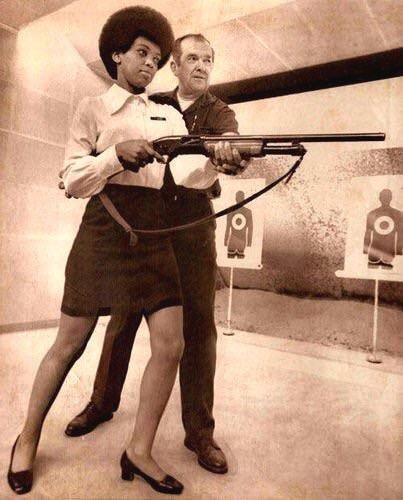
In 1970, Saundra Brown became the first black woman on the Oakland police force to be officially trained on how to shoot a gun.
Saundra was a police officer between 1970 and 1977. After her time on the force, she received a J.D. from the University of San Francisco School of Law. She went on to become a deputy district attorney in Alameda County and she is now the Senior Judge of the United States District Court for the Northern District of California.
This rare historical photo recalls an iconic moment in her life time and black history.
Freddie's Cat
Here we have Freddie Mercury photographed with his cat Tiffany in 1988.
The image looks like the first selfie and is a closeup of the Queen front man with his cat. Mercury is known to be a huge cat lover but, in this photo, Tiffany could not look more unenthused. Freddie looks photo ready with his funky shirt and killer pout but the cat has the grumpiest face on which suggests that unlike her loving owner, she is not a fan of fame.
Goodbye Kiss
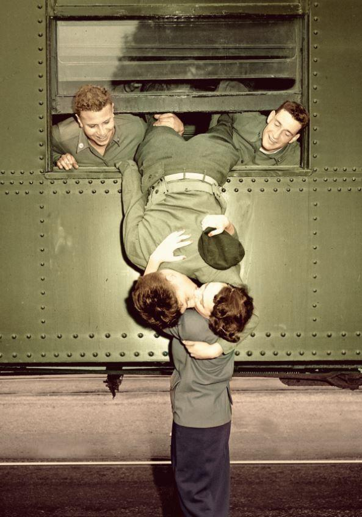
With the help of Harvey Wilson (left) and Frank Harvey (right), Private Robert Maye is leaning down from a window to kiss his wife, Gloria, goodbye before leaving for the Korean War in 1950.
The Korean War was declared in 1950 and lasted for three years. The U.S. and the Soviet Union accepted mutual responsibility for the country and the Americans headed South. America withdrew their remaining troops and the American soldiers returned home on June 25, 1950. This is when North Korea took the opportunity to attack the South.
Cairo In the 1920s
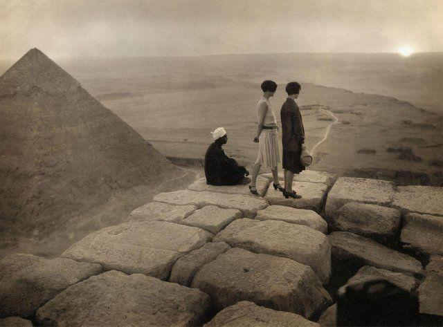
This stunning image captures a small group of tourists in the 1920s looking across the Sahara Desert.
The image was captured before Cairo expanded and became a bustling tourist hotspot. This lucky group of individuals have climbed o the top of the Pyramid of Cheops at sunset to look across the desert. There is no one around and so the view in front of them is just desert for miles and miles with no crowds or cell phones disrupting the peaceful image.
Nixon Resigns
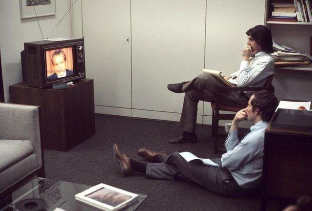
Bob Woodward and Carl Bernstein are sat together side by side watching President Nixon resign in 1974.
The Watergate scandal had shocked America for two years and rather than admit to his wrongdoings, Nixon stepped down halfway through his second term.
The Watergate scandal tarnished his legacy and Bob Woodward and Carl Bernstein were the reporters who brought the scandal to the public's attention. Here, they are triumphantly watching as they witness their journalist venture result in the president's resignation.
Late Night Phonecalls
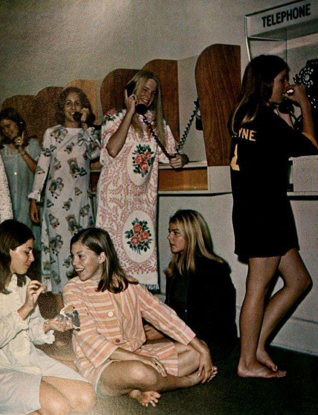
This is a photograph of a female dormitory late at night in the 1970s.
The image gives insight into what college life was like before the days of Facebook and mobile phones.
The group of women have gathered in their nightwear to make late night phone calls to their friends and loved ones. A group of giggling girls wait by the phone to have their turn. Without immediate access to a personal cell, there was always a queue for the community phones.
Moving a 5MB IBM Hard Drive
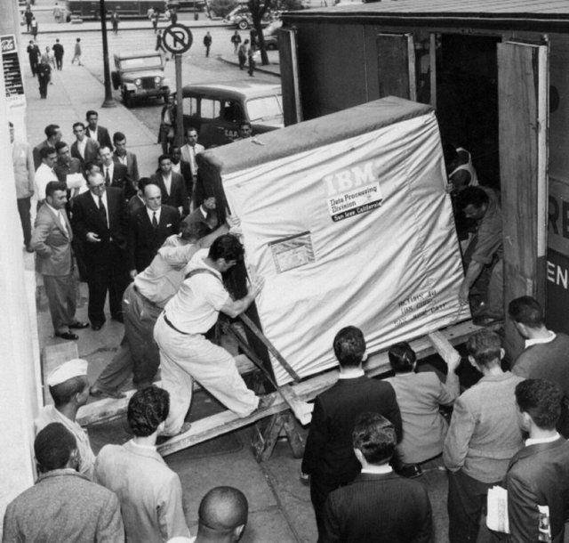
This enormous box contains a 5MB IBM hard drive, 1956.
Nowadays, laptops and phones are so skinny and light that we can pick them up with our left hand. The first hard drives, however, were far heavier and took up far more space. In this photograph, at least four men are struggling to maneuver the hard drive onto a truck. The IBM Model could hold 5 MB of storage which is about 6 images worth. A company could lease the storage for $3,200 a month which is probably around $30,000 today when you account for inflation!
Albert Einstein's Lecture On Relativity
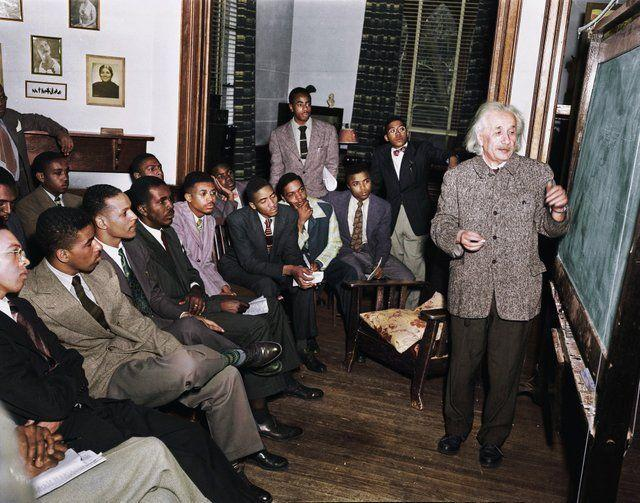
In 1946, Albert Einstein traveled to the Lincoln University in Pennsylvania to teach at the first school in America to grant college degrees to black students.
While teaching at the university, Einstein gave a powerful speech in which he described racism as “a disease of white people.” He added, “I do not intend to be quiet about it.” As a member of the Jewish community in 1940s Europe, Einstein was familiar with the horrendous outcomes of racist attitudes. Here, he is giving a lecture on his theory of relativity to Lincoln students.
The First Selfie
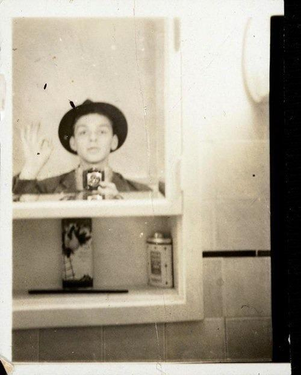
Nowadays, we see hundreds of selfies all over our Facebook and Instagram feeds around the clock. Every now and then though, we stumble across something special.
This particular selfie is special because it was not taken in 2019 Starbucks but was taken in the mirror in 1938. To make the photo even more special, it has been taken by the legendary Frank Sinatra when he was just 17 years old. We can't see what kind of camera he is holding but we're pretty certain it's no iPhone 6…
Casually Posing In Front of a Tornado
In terms of impressive backdrops, you can't get much cooler than an actual tornado. This woman is not posing in front of a green screen, she is actually striking a pose in front of a real life, really dangerous tornado in 1989. The tornado may be in the distance but you can actually see her hair blowing dramatically in the strong winds. We hope that she managed to get away soon after this mad photo was taken even though the tornado is nowhere near as breezy as her pose.
Japanese Zen Archers
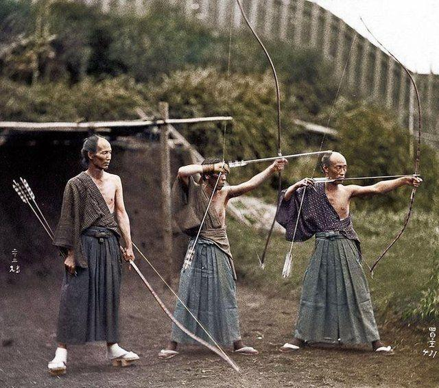
This image of Japanese Zen archers in the 1860s has been colorized. Traditionally, the archers would shoot at a target 28 meters away from them. The arrows (Ya) were made with feathers from each wing of a single bird.
The outfit the men are wearing is the traditional Kyudo outfit. It consists of a Kimono and Hakama. One sleeve of the Kimono is taken off in order keep the garment from interfering with the shot. Kyudo is a form of archery where everything is done very slowly and deliberately. It is a form of meditation.
Paris Flood, 1924
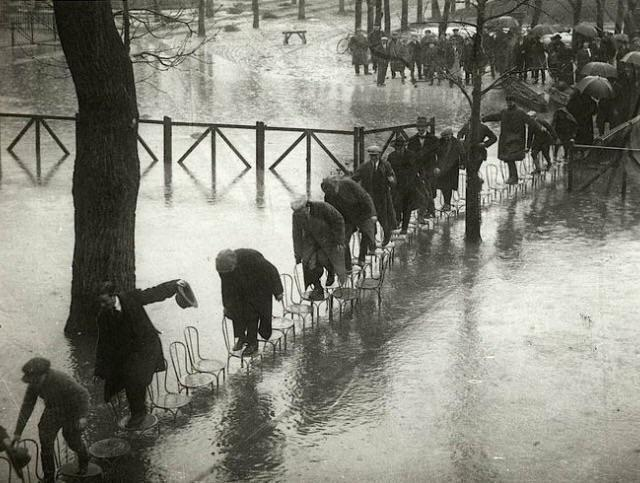
This photograph captures 1924's Paris flood. The water levels have risen so high that citizens were unable to cross over the road without getting completely drenched in cold water. A group of people came up with the solution to build a bridge out of whatever they could find. They ended up making a long line of chairs so that people could cross from one side to the other without getting their clothes ruined by the big dirty puddle.
Christmas Truce
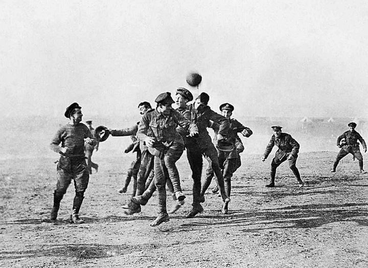
During Christmas 1914, French, German and British soldiers called an unofficial ceasefire along the Western front.
In the spirit of Christmas, the soldiers ventured into no-man's land to chat, exchange gifts and swap prisoners. In some camps, they even partook in joint burial services for their lost soldiers and the meetings ended in carol singing.
Universal History Archive/Shutterstock (5205495a)
The event became known as the Christmas Truce and is best known by photos of men from both sides playing a friendly game of soccer together.
Battle of the Network Stars
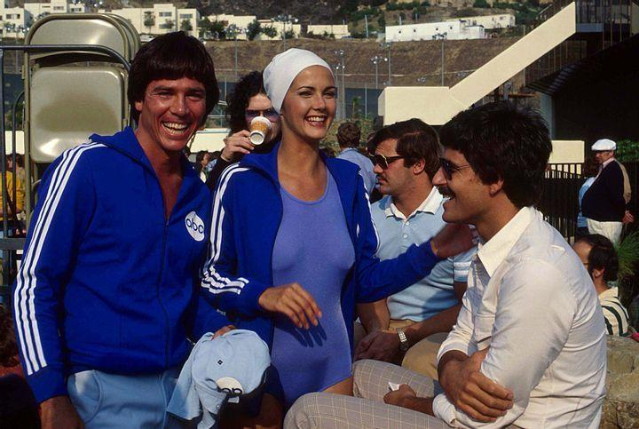
Battle of the Network Stars was a series of competitions in which TV stars from ABC, CBS, and NBC competed in different sporting events. These competitions were held between 1976 and 1988, and aired at ABC.
Globe Photos/mediapunch/Shutterstock (10271384a)
This picture depicts Olympic champion Mark Spitz and the original Wonder Woman Lynda Carter at a competition that took place in 1976.
Soviet Union Arctic Exploration
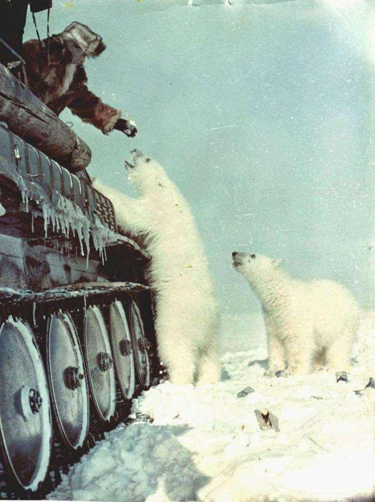
This is a touching photograph of soldiers feeding polar bears in the Soviet Union in 1950.
The polar bears may be surprised to see a huge tank in their habitat but they are clambering up the sides to receive a treat from the soldiers sticking their hand out from the top. In 1950, the Soviet manned drifting research stations on the ice of the high latitudes of the Arctic Ocean. The research contributed greatly to the exploration of the North Pole.